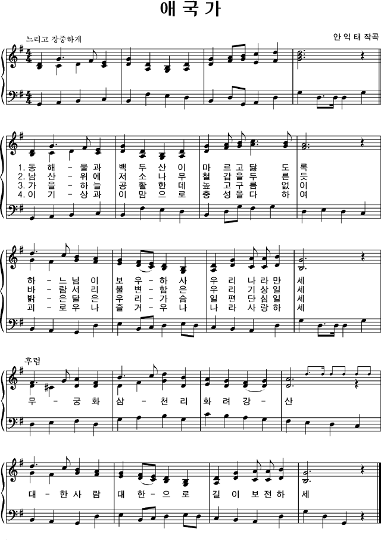

애국가란?
애국가(愛國歌)는 대한민국의 국가이다. 1919년 안창호에 의해 대한민국 임시 정부에서 스코틀랜드 민요인 〈작별〉에 삽입해서 부르기 시작하다가 1935년 한국의 작곡가 안익태가 지은 《한국환상곡》에 가사를 삽입해서 현재까지 부르고 있다.
가사의 작사자는 윤치호 설, 안창호 설, 윤치호와 최병헌 합작설 등이 있다. 윤치호의 작사설 때문에 대한민국 임시 정부에서는 애국가를 바꾸려 하였으나 대한민국 임시 정부 주석 김구의 변호로 계속 애국가로 채택하게 되었다.[1] 이후 1948년의 정부 수립 이후 국가로 사용되어 왔으며, 2010년 국민의례 규정에서 국민의례시 애국가를 부르거나 연주하도록 함으로써 국가로서의 역할을 간접적으로 규정하고 있다.[2][3]
